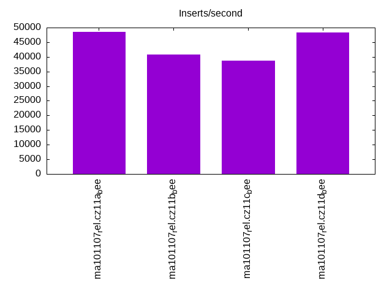

Introduction
This is a report for the insert benchmark with 32M docs and 4 client(s). It is generated by scripts (bash, awk, sed) and Tufte might not be impressed. An overview of the insert benchmark is here and a short update is here. Below, by DBMS, I mean DBMS+version.config. An example is my8020.c10b40 where my means MySQL, 8020 is version 8.0.20 and c10b40 is the name for the configuration file.
The test server has 8 AMD cores, 16G RAM and an NVMe SSD. It is described here as the Beelink. The benchmark was run with 1 client and there were 1 or 3 connections per client (1 for queries or inserts without rate limits, 1+1 for rate limited inserts+deletes). It uses 4 tables with a table per client. It loads 8M rows per table without secondary indexes, creates 3 secondary indexes per table, then inserts 40m+10m rows per table with a delete per insert to avoid growing the table. It then does 6 read+write tests for 1800s each that do queries as fast as possible with 100,100,500,500,1000,1000 inserts/s and the same for deletes/s per client concurrent with the queries. The database is cached in memory. Clients and the DBMS share one server. The per-database configs are in the per-database subdirectories here.
The tested DBMS are:
- ma101107_rel.cz11a_bee - MariaDB 10.11.7 with the cz11a_bee config
- ma101107_rel.cz11b_bee - MariaDB 10.11.7 with the cz11b_bee config that uses innodb_flush_method=O_DIRECT
- ma101107_rel.cz11c_bee - MariaDB 10.11.7 with the cz11c_bee config that uses innodb_flush_method=fsync
- ma101107_rel.cz11d_bee - MariaDB 10.11.7 with the cz11d_bee config that uses innodb_change_buffering=all
Contents
- Summary
- l.i0: load without secondary indexes
- l.x: create secondary indexes
- l.i1: continue load after secondary indexes created with 50 inserts per transaction
- l.i2: continue load after secondary indexes created with 5 inserts per transaction
- qr100.L1: range queries with 100 insert/s per client
- qp100.L2: point queries with 100 insert/s per client
- qr500.L3: range queries with 500 insert/s per client
- qp500.L4: point queries with 500 insert/s per client
- qr1000.L5: range queries with 1000 insert/s per client
- qp1000.L6: point queries with 1000 insert/s per client
Summary
The numbers are inserts/s for l.i0, l.i1 and l.i2, indexed docs (or rows) /s for l.x and queries/s for qr100, qp100 thru qr1000, qp1000" The values are the average rate over the entire test for inserts (IPS) and queries (QPS). The range of values for IPS and QPS is split into 3 parts: bottom 25%, middle 50%, top 25%. Values in the bottom 25% have a red background, values in the top 25% have a green background and values in the middle have no color. A gray background is used for values that can be ignored because the DBMS did not sustain the target insert rate. Red backgrounds are not used when the minimum value is within 80% of the max value.
| dbms | l.i0 | l.x | l.i1 | l.i2 | qr100 | qp100 | qr500 | qp500 | qr1000 | qp1000 |
|---|---|---|---|---|---|---|---|---|---|---|
| ma101107_rel.cz11a_bee | 251968 | 421054 | 48558 | 22222 | 16259 | 19804 | 16269 | 19191 | 15856 | 18791 |
| ma101107_rel.cz11b_bee | 197531 | 463770 | 40879 | 21918 | 16028 | 18924 | 16138 | 19189 | 15676 | 18808 |
| ma101107_rel.cz11c_bee | 172973 | 470590 | 38750 | 19465 | 15989 | 19178 | 16099 | 19213 | 15638 | 18826 |
| ma101107_rel.cz11d_bee | 251968 | 463770 | 48324 | 22112 | 16092 | 19075 | 16294 | 19208 | 15793 | 18780 |
This table has relative throughput, throughput for the DBMS relative to the DBMS in the first line, using the absolute throughput from the previous table. Values less than 0.95 have a yellow background. Values greater than 1.05 have a blue background.
| dbms | l.i0 | l.x | l.i1 | l.i2 | qr100 | qp100 | qr500 | qp500 | qr1000 | qp1000 |
|---|---|---|---|---|---|---|---|---|---|---|
| ma101107_rel.cz11a_bee | 1.00 | 1.00 | 1.00 | 1.00 | 1.00 | 1.00 | 1.00 | 1.00 | 1.00 | 1.00 |
| ma101107_rel.cz11b_bee | 0.78 | 1.10 | 0.84 | 0.99 | 0.99 | 0.96 | 0.99 | 1.00 | 0.99 | 1.00 |
| ma101107_rel.cz11c_bee | 0.69 | 1.12 | 0.80 | 0.88 | 0.98 | 0.97 | 0.99 | 1.00 | 0.99 | 1.00 |
| ma101107_rel.cz11d_bee | 1.00 | 1.10 | 1.00 | 1.00 | 0.99 | 0.96 | 1.00 | 1.00 | 1.00 | 1.00 |
This lists the average rate of inserts/s for the tests that do inserts concurrent with queries. For such tests the query rate is listed in the table above. The read+write tests are setup so that the insert rate should match the target rate every second. Cells that are not at least 95% of the target have a red background to indicate a failure to satisfy the target.
| dbms | qr100.L1 | qp100.L2 | qr500.L3 | qp500.L4 | qr1000.L5 | qp1000.L6 |
|---|---|---|---|---|---|---|
| ma101107_rel.cz11a_bee | 399 | 399 | 1993 | 1994 | 3989 | 3989 |
| ma101107_rel.cz11b_bee | 399 | 399 | 1994 | 1993 | 3989 | 3989 |
| ma101107_rel.cz11c_bee | 399 | 399 | 1993 | 1994 | 3989 | 3989 |
| ma101107_rel.cz11d_bee | 399 | 399 | 1994 | 1994 | 3989 | 3989 |
| target | 400 | 400 | 2000 | 2000 | 4000 | 4000 |
l.i0
l.i0: load without secondary indexes. Graphs for performance per 1-second interval are here.
Average throughput:

Insert response time histogram: each cell has the percentage of responses that take <= the time in the header and max is the max response time in seconds. For the max column values in the top 25% of the range have a red background and in the bottom 25% of the range have a green background. The red background is not used when the min value is within 80% of the max value.
| dbms | 256us | 1ms | 4ms | 16ms | 64ms | 256ms | 1s | 4s | 16s | gt | max |
|---|---|---|---|---|---|---|---|---|---|---|---|
| ma101107_rel.cz11a_bee | 3.082 | 94.691 | 2.171 | 0.037 | 0.019 | 0.196 | |||||
| ma101107_rel.cz11b_bee | 2.473 | 95.289 | 2.143 | 0.075 | 0.017 | 0.001 | 0.001 | 19.505 | |||
| ma101107_rel.cz11c_bee | 2.562 | 95.150 | 2.202 | 0.065 | 0.017 | 0.001 | 0.001 | 0.001 | 56.292 | ||
| ma101107_rel.cz11d_bee | 2.832 | 94.928 | 2.173 | 0.048 | 0.019 | 0.191 |
Performance metrics for the DBMS listed above. Some are normalized by throughput, others are not. Legend for results is here.
ips qps rps rmbps wps wmbps rpq rkbpq wpi wkbpi csps cpups cspq cpupq dbgb1 dbgb2 rss maxop p50 p99 tag 251968 0 0 0.0 825.8 65.9 0.000 0.000 0.003 0.268 30027 73.1 0.119 23 2.1 18.0 2.3 0.196 70388 54159 ma101107_rel.cz11a_bee 197531 0 0 0.0 676.1 51.6 0.000 0.000 0.003 0.267 24320 58.4 0.123 24 2.1 18.0 2.3 19.505 68226 0 ma101107_rel.cz11b_bee 172973 0 0 0.0 200.7 45.5 0.000 0.000 0.001 0.269 21849 51.6 0.126 24 2.1 18.0 2.4 56.292 66428 0 ma101107_rel.cz11c_bee 251968 0 0 0.0 825.0 65.8 0.000 0.000 0.003 0.267 30437 73.1 0.121 23 2.1 18.0 2.3 0.191 69924 54141 ma101107_rel.cz11d_bee
l.x
l.x: create secondary indexes.
Average throughput:
Performance metrics for the DBMS listed above. Some are normalized by throughput, others are not. Legend for results is here.
ips qps rps rmbps wps wmbps rpq rkbpq wpi wkbpi csps cpups cspq cpupq dbgb1 dbgb2 rss maxop p50 p99 tag 421054 0 0 0.0 2409.0 307.4 0.000 0.000 0.006 0.748 8497 41.3 0.020 8 4.8 20.6 4.4 0.002 NA NA ma101107_rel.cz11a_bee 463770 0 0 0.0 2475.2 329.4 0.000 0.000 0.005 0.727 8168 44.6 0.018 8 4.8 20.6 4.6 0.002 NA NA ma101107_rel.cz11b_bee 470590 0 0 0.0 832.6 347.9 0.000 0.000 0.002 0.757 8430 44.5 0.018 8 4.8 20.6 4.5 0.002 NA NA ma101107_rel.cz11c_bee 463770 0 0 0.0 2466.4 347.0 0.000 0.000 0.005 0.766 8053 44.1 0.017 8 4.8 20.6 4.6 0.002 NA NA ma101107_rel.cz11d_bee
l.i1
l.i1: continue load after secondary indexes created with 50 inserts per transaction. Graphs for performance per 1-second interval are here.
Average throughput:
Insert response time histogram: each cell has the percentage of responses that take <= the time in the header and max is the max response time in seconds. For the max column values in the top 25% of the range have a red background and in the bottom 25% of the range have a green background. The red background is not used when the min value is within 80% of the max value.
| dbms | 256us | 1ms | 4ms | 16ms | 64ms | 256ms | 1s | 4s | 16s | gt | max |
|---|---|---|---|---|---|---|---|---|---|---|---|
| ma101107_rel.cz11a_bee | 63.882 | 35.728 | 0.380 | 0.010 | nonzero | 0.294 | |||||
| ma101107_rel.cz11b_bee | 62.906 | 33.202 | 3.859 | 0.032 | 0.001 | 0.515 | |||||
| ma101107_rel.cz11c_bee | 80.939 | 15.100 | 3.350 | 0.537 | 0.074 | nonzero | 1.143 | ||||
| ma101107_rel.cz11d_bee | 63.224 | 36.385 | 0.381 | 0.009 | nonzero | 0.345 |
Delete response time histogram: each cell has the percentage of responses that take <= the time in the header and max is the max response time in seconds. For the max column values in the top 25% of the range have a red background and in the bottom 25% of the range have a green background. The red background is not used when the min value is within 80% of the max value.
| dbms | 256us | 1ms | 4ms | 16ms | 64ms | 256ms | 1s | 4s | 16s | gt | max |
|---|---|---|---|---|---|---|---|---|---|---|---|
| ma101107_rel.cz11a_bee | 77.259 | 22.493 | 0.240 | 0.008 | nonzero | 0.293 | |||||
| ma101107_rel.cz11b_bee | 76.929 | 19.992 | 3.054 | 0.024 | nonzero | 0.352 | |||||
| ma101107_rel.cz11c_bee | nonzero | 86.025 | 10.400 | 3.020 | 0.480 | 0.074 | 0.911 | ||||
| ma101107_rel.cz11d_bee | 77.090 | 22.669 | 0.233 | 0.008 | nonzero | 0.339 |
Performance metrics for the DBMS listed above. Some are normalized by throughput, others are not. Legend for results is here.
ips qps rps rmbps wps wmbps rpq rkbpq wpi wkbpi csps cpups cspq cpupq dbgb1 dbgb2 rss maxop p50 p99 tag 48558 0 2074 8.1 5851.2 215.6 0.043 0.171 0.120 4.546 75160 75.3 1.548 124 6.7 22.5 6.6 0.294 12241 8239 ma101107_rel.cz11a_bee 40879 0 1767 6.9 5256.3 184.9 0.043 0.173 0.129 4.632 69802 66.4 1.708 130 6.7 22.9 6.6 0.515 10139 5394 ma101107_rel.cz11b_bee 38750 0 1430 5.6 3585.7 126.2 0.037 0.148 0.093 3.336 40856 59.5 1.054 123 8.5 25.8 10.2 1.143 10639 150 ma101107_rel.cz11c_bee 48324 0 2075 8.1 5865.6 215.7 0.043 0.172 0.121 4.570 75476 75.5 1.562 125 6.6 22.4 6.6 0.345 12191 7991 ma101107_rel.cz11d_bee
l.i2
l.i2: continue load after secondary indexes created with 5 inserts per transaction. Graphs for performance per 1-second interval are here.
Average throughput:
Insert response time histogram: each cell has the percentage of responses that take <= the time in the header and max is the max response time in seconds. For the max column values in the top 25% of the range have a red background and in the bottom 25% of the range have a green background. The red background is not used when the min value is within 80% of the max value.
| dbms | 256us | 1ms | 4ms | 16ms | 64ms | 256ms | 1s | 4s | 16s | gt | max |
|---|---|---|---|---|---|---|---|---|---|---|---|
| ma101107_rel.cz11a_bee | 0.011 | 82.903 | 15.979 | 1.102 | 0.004 | 0.001 | 0.145 | ||||
| ma101107_rel.cz11b_bee | 0.072 | 83.677 | 14.958 | 1.227 | 0.065 | 0.001 | 0.237 | ||||
| ma101107_rel.cz11c_bee | 0.348 | 85.303 | 12.647 | 1.099 | 0.590 | 0.013 | nonzero | 0.283 | |||
| ma101107_rel.cz11d_bee | 0.008 | 82.505 | 16.379 | 1.103 | 0.003 | 0.001 | 0.109 |
Delete response time histogram: each cell has the percentage of responses that take <= the time in the header and max is the max response time in seconds. For the max column values in the top 25% of the range have a red background and in the bottom 25% of the range have a green background. The red background is not used when the min value is within 80% of the max value.
| dbms | 256us | 1ms | 4ms | 16ms | 64ms | 256ms | 1s | 4s | 16s | gt | max |
|---|---|---|---|---|---|---|---|---|---|---|---|
| ma101107_rel.cz11a_bee | 0.026 | 83.191 | 15.635 | 1.143 | 0.004 | 0.001 | 0.144 | ||||
| ma101107_rel.cz11b_bee | 0.125 | 83.946 | 14.618 | 1.252 | 0.057 | 0.001 | 0.220 | ||||
| ma101107_rel.cz11c_bee | 0.573 | 85.326 | 12.461 | 1.103 | 0.525 | 0.012 | nonzero | 0.285 | |||
| ma101107_rel.cz11d_bee | 0.027 | 82.897 | 15.929 | 1.142 | 0.003 | 0.001 | 0.110 |
Performance metrics for the DBMS listed above. Some are normalized by throughput, others are not. Legend for results is here.
ips qps rps rmbps wps wmbps rpq rkbpq wpi wkbpi csps cpups cspq cpupq dbgb1 dbgb2 rss maxop p50 p99 tag 22222 0 3118 12.2 2641.7 99.3 0.140 0.561 0.119 4.576 93789 73.6 4.221 265 6.7 22.5 6.5 0.145 5572 5049 ma101107_rel.cz11a_bee 21918 0 3078 12.0 2678.2 97.5 0.140 0.562 0.122 4.554 93517 72.6 4.267 265 6.7 22.9 6.5 0.237 5529 4215 ma101107_rel.cz11b_bee 19465 0 2765 10.8 2411.0 89.6 0.142 0.568 0.124 4.715 81767 65.7 4.201 270 8.5 25.8 10.5 0.283 5226 180 ma101107_rel.cz11c_bee 22112 0 3104 12.1 2633.4 98.9 0.140 0.561 0.119 4.582 93581 73.7 4.232 267 6.6 22.4 6.5 0.109 5546 4900 ma101107_rel.cz11d_bee
qr100.L1
qr100.L1: range queries with 100 insert/s per client. Graphs for performance per 1-second interval are here.
Average throughput:
Query response time histogram: each cell has the percentage of responses that take <= the time in the header and max is the max response time in seconds. For max values in the top 25% of the range have a red background and in the bottom 25% of the range have a green background. The red background is not used when the min value is within 80% of the max value.
| dbms | 256us | 1ms | 4ms | 16ms | 64ms | 256ms | 1s | 4s | 16s | gt | max |
|---|---|---|---|---|---|---|---|---|---|---|---|
| ma101107_rel.cz11a_bee | 70.969 | 29.013 | 0.016 | 0.002 | 0.008 | ||||||
| ma101107_rel.cz11b_bee | 68.939 | 31.044 | 0.016 | 0.002 | 0.010 | ||||||
| ma101107_rel.cz11c_bee | 68.761 | 31.221 | 0.016 | 0.001 | 0.011 | ||||||
| ma101107_rel.cz11d_bee | 69.361 | 30.623 | 0.015 | 0.001 | 0.012 |
Insert response time histogram: each cell has the percentage of responses that take <= the time in the header and max is the max response time in seconds. For max values in the top 25% of the range have a red background and in the bottom 25% of the range have a green background. The red background is not used when the min value is within 80% of the max value.
| dbms | 256us | 1ms | 4ms | 16ms | 64ms | 256ms | 1s | 4s | 16s | gt | max |
|---|---|---|---|---|---|---|---|---|---|---|---|
| ma101107_rel.cz11a_bee | 57.799 | 42.194 | 0.007 | 0.019 | |||||||
| ma101107_rel.cz11b_bee | 87.910 | 12.090 | 0.012 | ||||||||
| ma101107_rel.cz11c_bee | 74.403 | 25.597 | 0.016 | ||||||||
| ma101107_rel.cz11d_bee | 75.174 | 24.826 | 0.014 |
Delete response time histogram: each cell has the percentage of responses that take <= the time in the header and max is the max response time in seconds. For max values in the top 25% of the range have a red background and in the bottom 25% of the range have a green background. The red background is not used when the min value is within 80% of the max value.
| dbms | 256us | 1ms | 4ms | 16ms | 64ms | 256ms | 1s | 4s | 16s | gt | max |
|---|---|---|---|---|---|---|---|---|---|---|---|
| ma101107_rel.cz11a_bee | 59.639 | 40.347 | 0.014 | 0.019 | |||||||
| ma101107_rel.cz11b_bee | 87.910 | 12.090 | 0.013 | ||||||||
| ma101107_rel.cz11c_bee | 74.785 | 25.215 | 0.015 | ||||||||
| ma101107_rel.cz11d_bee | 75.528 | 24.472 | 0.014 |
Performance metrics for the DBMS listed above. Some are normalized by throughput, others are not. Legend for results is here.
ips qps rps rmbps wps wmbps rpq rkbpq wpi wkbpi csps cpups cspq cpupq dbgb1 dbgb2 rss maxop p50 p99 tag 399 16259 10 0.0 9.3 0.6 0.001 0.003 0.023 1.645 61983 50.9 3.812 250 6.7 22.5 6.5 0.008 4029 3532 ma101107_rel.cz11a_bee 399 16028 14 0.1 8.2 0.6 0.001 0.003 0.021 1.524 61135 50.9 3.814 254 6.7 22.9 6.5 0.010 3996 3500 ma101107_rel.cz11b_bee 399 15989 12 0.0 2.2 0.4 0.001 0.003 0.006 1.131 60944 50.9 3.812 255 8.5 25.8 9.7 0.011 3980 3484 ma101107_rel.cz11c_bee 399 16092 12 0.0 19.7 0.9 0.001 0.003 0.049 2.406 61430 51.0 3.818 254 6.6 22.4 6.5 0.012 4012 3500 ma101107_rel.cz11d_bee
qp100.L2
qp100.L2: point queries with 100 insert/s per client. Graphs for performance per 1-second interval are here.
Average throughput:
Query response time histogram: each cell has the percentage of responses that take <= the time in the header and max is the max response time in seconds. For max values in the top 25% of the range have a red background and in the bottom 25% of the range have a green background. The red background is not used when the min value is within 80% of the max value.
| dbms | 256us | 1ms | 4ms | 16ms | 64ms | 256ms | 1s | 4s | 16s | gt | max |
|---|---|---|---|---|---|---|---|---|---|---|---|
| ma101107_rel.cz11a_bee | 98.034 | 1.923 | 0.042 | 0.001 | 0.008 | ||||||
| ma101107_rel.cz11b_bee | 94.936 | 5.019 | 0.044 | 0.002 | 0.010 | ||||||
| ma101107_rel.cz11c_bee | 95.727 | 4.228 | 0.044 | 0.001 | 0.012 | ||||||
| ma101107_rel.cz11d_bee | 95.813 | 4.141 | 0.045 | 0.001 | 0.009 |
Insert response time histogram: each cell has the percentage of responses that take <= the time in the header and max is the max response time in seconds. For max values in the top 25% of the range have a red background and in the bottom 25% of the range have a green background. The red background is not used when the min value is within 80% of the max value.
| dbms | 256us | 1ms | 4ms | 16ms | 64ms | 256ms | 1s | 4s | 16s | gt | max |
|---|---|---|---|---|---|---|---|---|---|---|---|
| ma101107_rel.cz11a_bee | 81.306 | 18.694 | 0.015 | ||||||||
| ma101107_rel.cz11b_bee | 87.646 | 12.354 | 0.015 | ||||||||
| ma101107_rel.cz11c_bee | 75.514 | 24.486 | 0.015 | ||||||||
| ma101107_rel.cz11d_bee | 86.646 | 13.347 | 0.007 | 0.016 |
Delete response time histogram: each cell has the percentage of responses that take <= the time in the header and max is the max response time in seconds. For max values in the top 25% of the range have a red background and in the bottom 25% of the range have a green background. The red background is not used when the min value is within 80% of the max value.
| dbms | 256us | 1ms | 4ms | 16ms | 64ms | 256ms | 1s | 4s | 16s | gt | max |
|---|---|---|---|---|---|---|---|---|---|---|---|
| ma101107_rel.cz11a_bee | 81.500 | 18.500 | 0.014 | ||||||||
| ma101107_rel.cz11b_bee | 87.785 | 12.215 | 0.016 | ||||||||
| ma101107_rel.cz11c_bee | 75.826 | 24.167 | 0.007 | 0.017 | |||||||
| ma101107_rel.cz11d_bee | 86.625 | 13.375 | 0.015 |
Performance metrics for the DBMS listed above. Some are normalized by throughput, others are not. Legend for results is here.
ips qps rps rmbps wps wmbps rpq rkbpq wpi wkbpi csps cpups cspq cpupq dbgb1 dbgb2 rss maxop p50 p99 tag 399 19804 13 0.1 21.2 1.0 0.001 0.003 0.053 2.520 78848 51.0 3.981 206 6.7 22.5 6.5 0.008 4981 4509 ma101107_rel.cz11a_bee 399 18924 14 0.1 20.0 0.9 0.001 0.003 0.050 2.391 74496 50.7 3.937 214 6.7 22.9 6.6 0.010 4797 3948 ma101107_rel.cz11b_bee 399 19178 13 0.0 2.6 0.5 0.001 0.003 0.007 1.158 75669 50.7 3.946 211 8.5 25.8 9.7 0.012 4908 3916 ma101107_rel.cz11c_bee 399 19075 14 0.1 25.4 1.1 0.001 0.003 0.064 2.834 75405 50.7 3.953 213 6.6 22.4 6.5 0.009 4891 3964 ma101107_rel.cz11d_bee
qr500.L3
qr500.L3: range queries with 500 insert/s per client. Graphs for performance per 1-second interval are here.
Average throughput:
Query response time histogram: each cell has the percentage of responses that take <= the time in the header and max is the max response time in seconds. For max values in the top 25% of the range have a red background and in the bottom 25% of the range have a green background. The red background is not used when the min value is within 80% of the max value.
| dbms | 256us | 1ms | 4ms | 16ms | 64ms | 256ms | 1s | 4s | 16s | gt | max |
|---|---|---|---|---|---|---|---|---|---|---|---|
| ma101107_rel.cz11a_bee | 72.673 | 27.227 | 0.088 | 0.012 | nonzero | 0.024 | |||||
| ma101107_rel.cz11b_bee | 71.593 | 28.304 | 0.087 | 0.016 | nonzero | 0.042 | |||||
| ma101107_rel.cz11c_bee | 71.673 | 28.212 | 0.095 | 0.018 | 0.002 | nonzero | 0.121 | ||||
| ma101107_rel.cz11d_bee | 72.381 | 27.521 | 0.087 | 0.011 | nonzero | 0.019 |
Insert response time histogram: each cell has the percentage of responses that take <= the time in the header and max is the max response time in seconds. For max values in the top 25% of the range have a red background and in the bottom 25% of the range have a green background. The red background is not used when the min value is within 80% of the max value.
| dbms | 256us | 1ms | 4ms | 16ms | 64ms | 256ms | 1s | 4s | 16s | gt | max |
|---|---|---|---|---|---|---|---|---|---|---|---|
| ma101107_rel.cz11a_bee | 93.333 | 6.599 | 0.068 | 0.040 | |||||||
| ma101107_rel.cz11b_bee | 93.126 | 6.711 | 0.161 | 0.001 | 0.065 | ||||||
| ma101107_rel.cz11c_bee | 92.004 | 7.714 | 0.265 | 0.017 | 0.146 | ||||||
| ma101107_rel.cz11d_bee | 93.469 | 6.476 | 0.054 | 0.030 |
Delete response time histogram: each cell has the percentage of responses that take <= the time in the header and max is the max response time in seconds. For max values in the top 25% of the range have a red background and in the bottom 25% of the range have a green background. The red background is not used when the min value is within 80% of the max value.
| dbms | 256us | 1ms | 4ms | 16ms | 64ms | 256ms | 1s | 4s | 16s | gt | max |
|---|---|---|---|---|---|---|---|---|---|---|---|
| ma101107_rel.cz11a_bee | 95.182 | 4.783 | 0.035 | 0.040 | |||||||
| ma101107_rel.cz11b_bee | 95.106 | 4.814 | 0.081 | 0.039 | |||||||
| ma101107_rel.cz11c_bee | 94.540 | 5.317 | 0.139 | 0.004 | 0.134 | ||||||
| ma101107_rel.cz11d_bee | 95.265 | 4.715 | 0.019 | 0.029 |
Performance metrics for the DBMS listed above. Some are normalized by throughput, others are not. Legend for results is here.
ips qps rps rmbps wps wmbps rpq rkbpq wpi wkbpi csps cpups cspq cpupq dbgb1 dbgb2 rss maxop p50 p99 tag 1993 16269 72 0.3 240.5 8.7 0.004 0.018 0.121 4.455 62602 52.6 3.848 259 6.7 22.5 6.5 0.024 4044 3532 ma101107_rel.cz11a_bee 1994 16138 73 0.3 245.5 8.6 0.005 0.018 0.123 4.429 62149 52.5 3.851 260 6.7 22.9 6.6 0.042 4013 3468 ma101107_rel.cz11b_bee 1993 16099 73 0.3 260.1 9.4 0.005 0.018 0.130 4.817 61896 52.4 3.845 260 8.5 25.8 9.7 0.121 4012 3436 ma101107_rel.cz11c_bee 1994 16294 72 0.3 227.2 8.3 0.004 0.018 0.114 4.258 62675 52.7 3.846 259 6.6 22.4 6.5 0.019 4076 3516 ma101107_rel.cz11d_bee
qp500.L4
qp500.L4: point queries with 500 insert/s per client. Graphs for performance per 1-second interval are here.
Average throughput:
Query response time histogram: each cell has the percentage of responses that take <= the time in the header and max is the max response time in seconds. For max values in the top 25% of the range have a red background and in the bottom 25% of the range have a green background. The red background is not used when the min value is within 80% of the max value.
| dbms | 256us | 1ms | 4ms | 16ms | 64ms | 256ms | 1s | 4s | 16s | gt | max |
|---|---|---|---|---|---|---|---|---|---|---|---|
| ma101107_rel.cz11a_bee | 96.132 | 3.759 | 0.099 | 0.010 | nonzero | 0.019 | |||||
| ma101107_rel.cz11b_bee | 95.938 | 3.943 | 0.108 | 0.012 | nonzero | 0.018 | |||||
| ma101107_rel.cz11c_bee | 96.086 | 3.794 | 0.108 | 0.012 | nonzero | 0.017 | |||||
| ma101107_rel.cz11d_bee | 96.113 | 3.766 | 0.110 | 0.011 | nonzero | 0.018 |
Insert response time histogram: each cell has the percentage of responses that take <= the time in the header and max is the max response time in seconds. For max values in the top 25% of the range have a red background and in the bottom 25% of the range have a green background. The red background is not used when the min value is within 80% of the max value.
| dbms | 256us | 1ms | 4ms | 16ms | 64ms | 256ms | 1s | 4s | 16s | gt | max |
|---|---|---|---|---|---|---|---|---|---|---|---|
| ma101107_rel.cz11a_bee | 95.129 | 4.835 | 0.036 | 0.030 | |||||||
| ma101107_rel.cz11b_bee | 92.156 | 7.754 | 0.090 | 0.040 | |||||||
| ma101107_rel.cz11c_bee | 90.347 | 9.496 | 0.157 | 0.048 | |||||||
| ma101107_rel.cz11d_bee | 93.353 | 6.603 | 0.044 | 0.039 |
Delete response time histogram: each cell has the percentage of responses that take <= the time in the header and max is the max response time in seconds. For max values in the top 25% of the range have a red background and in the bottom 25% of the range have a green background. The red background is not used when the min value is within 80% of the max value.
| dbms | 256us | 1ms | 4ms | 16ms | 64ms | 256ms | 1s | 4s | 16s | gt | max |
|---|---|---|---|---|---|---|---|---|---|---|---|
| ma101107_rel.cz11a_bee | 96.296 | 3.690 | 0.014 | 0.028 | |||||||
| ma101107_rel.cz11b_bee | 94.221 | 5.740 | 0.039 | 0.040 | |||||||
| ma101107_rel.cz11c_bee | 93.086 | 6.818 | 0.096 | 0.044 | |||||||
| ma101107_rel.cz11d_bee | 95.157 | 4.821 | 0.022 | 0.039 |
Performance metrics for the DBMS listed above. Some are normalized by throughput, others are not. Legend for results is here.
ips qps rps rmbps wps wmbps rpq rkbpq wpi wkbpi csps cpups cspq cpupq dbgb1 dbgb2 rss maxop p50 p99 tag 1994 19191 74 0.3 195.9 7.4 0.004 0.015 0.098 3.802 77261 52.4 4.026 218 6.7 22.5 6.5 0.019 4827 4395 ma101107_rel.cz11a_bee 1993 19189 74 0.3 202.0 7.4 0.004 0.015 0.101 3.810 77308 52.4 4.029 218 6.7 22.9 6.5 0.018 4855 4411 ma101107_rel.cz11b_bee 1994 19213 73 0.3 193.6 7.5 0.004 0.015 0.097 3.827 77145 52.5 4.015 219 8.5 25.8 9.7 0.017 4829 4427 ma101107_rel.cz11c_bee 1994 19208 73 0.3 211.7 7.8 0.004 0.015 0.106 4.025 77412 52.4 4.030 218 6.6 22.4 6.5 0.018 4859 4395 ma101107_rel.cz11d_bee
qr1000.L5
qr1000.L5: range queries with 1000 insert/s per client. Graphs for performance per 1-second interval are here.
Average throughput:
Query response time histogram: each cell has the percentage of responses that take <= the time in the header and max is the max response time in seconds. For max values in the top 25% of the range have a red background and in the bottom 25% of the range have a green background. The red background is not used when the min value is within 80% of the max value.
| dbms | 256us | 1ms | 4ms | 16ms | 64ms | 256ms | 1s | 4s | 16s | gt | max |
|---|---|---|---|---|---|---|---|---|---|---|---|
| ma101107_rel.cz11a_bee | 72.121 | 27.597 | 0.255 | 0.027 | nonzero | 0.025 | |||||
| ma101107_rel.cz11b_bee | 70.838 | 28.872 | 0.254 | 0.034 | 0.001 | nonzero | 0.077 | ||||
| ma101107_rel.cz11c_bee | 71.344 | 28.328 | 0.283 | 0.040 | 0.004 | nonzero | 0.103 | ||||
| ma101107_rel.cz11d_bee | 71.551 | 28.145 | 0.278 | 0.026 | nonzero | 0.040 |
Insert response time histogram: each cell has the percentage of responses that take <= the time in the header and max is the max response time in seconds. For max values in the top 25% of the range have a red background and in the bottom 25% of the range have a green background. The red background is not used when the min value is within 80% of the max value.
| dbms | 256us | 1ms | 4ms | 16ms | 64ms | 256ms | 1s | 4s | 16s | gt | max |
|---|---|---|---|---|---|---|---|---|---|---|---|
| ma101107_rel.cz11a_bee | 73.843 | 25.893 | 0.264 | 0.042 | |||||||
| ma101107_rel.cz11b_bee | 72.099 | 27.505 | 0.395 | 0.001 | 0.069 | ||||||
| ma101107_rel.cz11c_bee | 71.402 | 27.980 | 0.610 | 0.008 | 0.133 | ||||||
| ma101107_rel.cz11d_bee | 69.611 | 30.113 | 0.276 | 0.039 |
Delete response time histogram: each cell has the percentage of responses that take <= the time in the header and max is the max response time in seconds. For max values in the top 25% of the range have a red background and in the bottom 25% of the range have a green background. The red background is not used when the min value is within 80% of the max value.
| dbms | 256us | 1ms | 4ms | 16ms | 64ms | 256ms | 1s | 4s | 16s | gt | max |
|---|---|---|---|---|---|---|---|---|---|---|---|
| ma101107_rel.cz11a_bee | 79.099 | 20.728 | 0.174 | 0.044 | |||||||
| ma101107_rel.cz11b_bee | 77.497 | 22.257 | 0.245 | 0.001 | 0.071 | ||||||
| ma101107_rel.cz11c_bee | 76.966 | 22.653 | 0.380 | 0.001 | 0.108 | ||||||
| ma101107_rel.cz11d_bee | 75.333 | 24.503 | 0.164 | 0.042 |
Performance metrics for the DBMS listed above. Some are normalized by throughput, others are not. Legend for results is here.
ips qps rps rmbps wps wmbps rpq rkbpq wpi wkbpi csps cpups cspq cpupq dbgb1 dbgb2 rss maxop p50 p99 tag 3989 15856 137 0.5 425.7 15.8 0.009 0.035 0.107 4.053 61745 54.3 3.894 274 6.7 22.5 6.5 0.025 3931 3420 ma101107_rel.cz11a_bee 3989 15676 135 0.5 436.5 15.7 0.009 0.034 0.109 4.035 61213 54.2 3.905 277 6.7 22.9 6.5 0.077 3933 3404 ma101107_rel.cz11b_bee 3989 15638 136 0.5 456.3 16.8 0.009 0.035 0.114 4.301 60982 54.0 3.899 276 8.5 25.8 9.7 0.103 3900 3276 ma101107_rel.cz11c_bee 3989 15793 130 0.5 422.5 15.7 0.008 0.033 0.106 4.032 61493 54.3 3.894 275 6.6 22.4 6.5 0.040 3964 3404 ma101107_rel.cz11d_bee
qp1000.L6
qp1000.L6: point queries with 1000 insert/s per client. Graphs for performance per 1-second interval are here.
Average throughput:
Query response time histogram: each cell has the percentage of responses that take <= the time in the header and max is the max response time in seconds. For max values in the top 25% of the range have a red background and in the bottom 25% of the range have a green background. The red background is not used when the min value is within 80% of the max value.
| dbms | 256us | 1ms | 4ms | 16ms | 64ms | 256ms | 1s | 4s | 16s | gt | max |
|---|---|---|---|---|---|---|---|---|---|---|---|
| ma101107_rel.cz11a_bee | 93.645 | 6.233 | 0.111 | 0.012 | nonzero | 0.016 | |||||
| ma101107_rel.cz11b_bee | 93.720 | 6.162 | 0.107 | 0.011 | nonzero | 0.020 | |||||
| ma101107_rel.cz11c_bee | 93.542 | 6.339 | 0.108 | 0.011 | nonzero | 0.063 | |||||
| ma101107_rel.cz11d_bee | 93.194 | 6.697 | 0.098 | 0.011 | nonzero | 0.022 |
Insert response time histogram: each cell has the percentage of responses that take <= the time in the header and max is the max response time in seconds. For max values in the top 25% of the range have a red background and in the bottom 25% of the range have a green background. The red background is not used when the min value is within 80% of the max value.
| dbms | 256us | 1ms | 4ms | 16ms | 64ms | 256ms | 1s | 4s | 16s | gt | max |
|---|---|---|---|---|---|---|---|---|---|---|---|
| ma101107_rel.cz11a_bee | 76.844 | 22.881 | 0.276 | 0.038 | |||||||
| ma101107_rel.cz11b_bee | 80.263 | 19.380 | 0.358 | 0.050 | |||||||
| ma101107_rel.cz11c_bee | 78.049 | 21.422 | 0.526 | 0.003 | 0.071 | ||||||
| ma101107_rel.cz11d_bee | 82.680 | 17.042 | 0.278 | 0.044 |
Delete response time histogram: each cell has the percentage of responses that take <= the time in the header and max is the max response time in seconds. For max values in the top 25% of the range have a red background and in the bottom 25% of the range have a green background. The red background is not used when the min value is within 80% of the max value.
| dbms | 256us | 1ms | 4ms | 16ms | 64ms | 256ms | 1s | 4s | 16s | gt | max |
|---|---|---|---|---|---|---|---|---|---|---|---|
| ma101107_rel.cz11a_bee | 81.510 | 18.310 | 0.181 | 0.042 | |||||||
| ma101107_rel.cz11b_bee | 84.139 | 15.667 | 0.194 | 0.038 | |||||||
| ma101107_rel.cz11c_bee | 82.430 | 17.262 | 0.308 | 0.001 | 0.064 | ||||||
| ma101107_rel.cz11d_bee | 86.371 | 13.469 | 0.160 | 0.051 |
Performance metrics for the DBMS listed above. Some are normalized by throughput, others are not. Legend for results is here.
ips qps rps rmbps wps wmbps rpq rkbpq wpi wkbpi csps cpups cspq cpupq dbgb1 dbgb2 rss maxop p50 p99 tag 3989 18791 139 0.5 420.7 15.6 0.007 0.030 0.105 4.009 75952 55.2 4.042 235 6.7 22.5 6.5 0.016 4715 4413 ma101107_rel.cz11a_bee 3989 18808 141 0.6 440.2 15.8 0.007 0.030 0.110 4.060 76093 55.2 4.046 235 6.7 22.9 6.5 0.020 4731 4381 ma101107_rel.cz11b_bee 3989 18826 140 0.5 452.7 16.6 0.007 0.030 0.113 4.271 75807 55.3 4.027 235 8.5 25.8 9.7 0.063 4747 4381 ma101107_rel.cz11c_bee 3989 18780 144 0.6 422.9 15.7 0.008 0.031 0.106 4.028 75746 55.4 4.033 236 6.6 22.4 6.5 0.022 4717 3981 ma101107_rel.cz11d_bee
l.i0
l.i0: load without secondary indexes
Performance metrics for all DBMS, not just the ones listed above. Some are normalized by throughput, others are not. Legend for results is here.
ips qps rps rmbps wps wmbps rpq rkbpq wpi wkbpi csps cpups cspq cpupq dbgb1 dbgb2 rss maxop p50 p99 tag 251968 0 0 0.0 825.8 65.9 0.000 0.000 0.003 0.268 30027 73.1 0.119 23 2.1 18.0 2.3 0.196 70388 54159 ma101107_rel.cz11a_bee 197531 0 0 0.0 676.1 51.6 0.000 0.000 0.003 0.267 24320 58.4 0.123 24 2.1 18.0 2.3 19.505 68226 0 ma101107_rel.cz11b_bee 172973 0 0 0.0 200.7 45.5 0.000 0.000 0.001 0.269 21849 51.6 0.126 24 2.1 18.0 2.4 56.292 66428 0 ma101107_rel.cz11c_bee 251968 0 0 0.0 825.0 65.8 0.000 0.000 0.003 0.267 30437 73.1 0.121 23 2.1 18.0 2.3 0.191 69924 54141 ma101107_rel.cz11d_bee
l.x
l.x: create secondary indexes
Performance metrics for all DBMS, not just the ones listed above. Some are normalized by throughput, others are not. Legend for results is here.
ips qps rps rmbps wps wmbps rpq rkbpq wpi wkbpi csps cpups cspq cpupq dbgb1 dbgb2 rss maxop p50 p99 tag 421054 0 0 0.0 2409.0 307.4 0.000 0.000 0.006 0.748 8497 41.3 0.020 8 4.8 20.6 4.4 0.002 NA NA ma101107_rel.cz11a_bee 463770 0 0 0.0 2475.2 329.4 0.000 0.000 0.005 0.727 8168 44.6 0.018 8 4.8 20.6 4.6 0.002 NA NA ma101107_rel.cz11b_bee 470590 0 0 0.0 832.6 347.9 0.000 0.000 0.002 0.757 8430 44.5 0.018 8 4.8 20.6 4.5 0.002 NA NA ma101107_rel.cz11c_bee 463770 0 0 0.0 2466.4 347.0 0.000 0.000 0.005 0.766 8053 44.1 0.017 8 4.8 20.6 4.6 0.002 NA NA ma101107_rel.cz11d_bee
l.i1
l.i1: continue load after secondary indexes created with 50 inserts per transaction
Performance metrics for all DBMS, not just the ones listed above. Some are normalized by throughput, others are not. Legend for results is here.
ips qps rps rmbps wps wmbps rpq rkbpq wpi wkbpi csps cpups cspq cpupq dbgb1 dbgb2 rss maxop p50 p99 tag 48558 0 2074 8.1 5851.2 215.6 0.043 0.171 0.120 4.546 75160 75.3 1.548 124 6.7 22.5 6.6 0.294 12241 8239 ma101107_rel.cz11a_bee 40879 0 1767 6.9 5256.3 184.9 0.043 0.173 0.129 4.632 69802 66.4 1.708 130 6.7 22.9 6.6 0.515 10139 5394 ma101107_rel.cz11b_bee 38750 0 1430 5.6 3585.7 126.2 0.037 0.148 0.093 3.336 40856 59.5 1.054 123 8.5 25.8 10.2 1.143 10639 150 ma101107_rel.cz11c_bee 48324 0 2075 8.1 5865.6 215.7 0.043 0.172 0.121 4.570 75476 75.5 1.562 125 6.6 22.4 6.6 0.345 12191 7991 ma101107_rel.cz11d_bee
l.i2
l.i2: continue load after secondary indexes created with 5 inserts per transaction
Performance metrics for all DBMS, not just the ones listed above. Some are normalized by throughput, others are not. Legend for results is here.
ips qps rps rmbps wps wmbps rpq rkbpq wpi wkbpi csps cpups cspq cpupq dbgb1 dbgb2 rss maxop p50 p99 tag 22222 0 3118 12.2 2641.7 99.3 0.140 0.561 0.119 4.576 93789 73.6 4.221 265 6.7 22.5 6.5 0.145 5572 5049 ma101107_rel.cz11a_bee 21918 0 3078 12.0 2678.2 97.5 0.140 0.562 0.122 4.554 93517 72.6 4.267 265 6.7 22.9 6.5 0.237 5529 4215 ma101107_rel.cz11b_bee 19465 0 2765 10.8 2411.0 89.6 0.142 0.568 0.124 4.715 81767 65.7 4.201 270 8.5 25.8 10.5 0.283 5226 180 ma101107_rel.cz11c_bee 22112 0 3104 12.1 2633.4 98.9 0.140 0.561 0.119 4.582 93581 73.7 4.232 267 6.6 22.4 6.5 0.109 5546 4900 ma101107_rel.cz11d_bee
qr100.L1
qr100.L1: range queries with 100 insert/s per client
Performance metrics for all DBMS, not just the ones listed above. Some are normalized by throughput, others are not. Legend for results is here.
ips qps rps rmbps wps wmbps rpq rkbpq wpi wkbpi csps cpups cspq cpupq dbgb1 dbgb2 rss maxop p50 p99 tag 399 16259 10 0.0 9.3 0.6 0.001 0.003 0.023 1.645 61983 50.9 3.812 250 6.7 22.5 6.5 0.008 4029 3532 ma101107_rel.cz11a_bee 399 16028 14 0.1 8.2 0.6 0.001 0.003 0.021 1.524 61135 50.9 3.814 254 6.7 22.9 6.5 0.010 3996 3500 ma101107_rel.cz11b_bee 399 15989 12 0.0 2.2 0.4 0.001 0.003 0.006 1.131 60944 50.9 3.812 255 8.5 25.8 9.7 0.011 3980 3484 ma101107_rel.cz11c_bee 399 16092 12 0.0 19.7 0.9 0.001 0.003 0.049 2.406 61430 51.0 3.818 254 6.6 22.4 6.5 0.012 4012 3500 ma101107_rel.cz11d_bee
qp100.L2
qp100.L2: point queries with 100 insert/s per client
Performance metrics for all DBMS, not just the ones listed above. Some are normalized by throughput, others are not. Legend for results is here.
ips qps rps rmbps wps wmbps rpq rkbpq wpi wkbpi csps cpups cspq cpupq dbgb1 dbgb2 rss maxop p50 p99 tag 399 19804 13 0.1 21.2 1.0 0.001 0.003 0.053 2.520 78848 51.0 3.981 206 6.7 22.5 6.5 0.008 4981 4509 ma101107_rel.cz11a_bee 399 18924 14 0.1 20.0 0.9 0.001 0.003 0.050 2.391 74496 50.7 3.937 214 6.7 22.9 6.6 0.010 4797 3948 ma101107_rel.cz11b_bee 399 19178 13 0.0 2.6 0.5 0.001 0.003 0.007 1.158 75669 50.7 3.946 211 8.5 25.8 9.7 0.012 4908 3916 ma101107_rel.cz11c_bee 399 19075 14 0.1 25.4 1.1 0.001 0.003 0.064 2.834 75405 50.7 3.953 213 6.6 22.4 6.5 0.009 4891 3964 ma101107_rel.cz11d_bee
qr500.L3
qr500.L3: range queries with 500 insert/s per client
Performance metrics for all DBMS, not just the ones listed above. Some are normalized by throughput, others are not. Legend for results is here.
ips qps rps rmbps wps wmbps rpq rkbpq wpi wkbpi csps cpups cspq cpupq dbgb1 dbgb2 rss maxop p50 p99 tag 1993 16269 72 0.3 240.5 8.7 0.004 0.018 0.121 4.455 62602 52.6 3.848 259 6.7 22.5 6.5 0.024 4044 3532 ma101107_rel.cz11a_bee 1994 16138 73 0.3 245.5 8.6 0.005 0.018 0.123 4.429 62149 52.5 3.851 260 6.7 22.9 6.6 0.042 4013 3468 ma101107_rel.cz11b_bee 1993 16099 73 0.3 260.1 9.4 0.005 0.018 0.130 4.817 61896 52.4 3.845 260 8.5 25.8 9.7 0.121 4012 3436 ma101107_rel.cz11c_bee 1994 16294 72 0.3 227.2 8.3 0.004 0.018 0.114 4.258 62675 52.7 3.846 259 6.6 22.4 6.5 0.019 4076 3516 ma101107_rel.cz11d_bee
qp500.L4
qp500.L4: point queries with 500 insert/s per client
Performance metrics for all DBMS, not just the ones listed above. Some are normalized by throughput, others are not. Legend for results is here.
ips qps rps rmbps wps wmbps rpq rkbpq wpi wkbpi csps cpups cspq cpupq dbgb1 dbgb2 rss maxop p50 p99 tag 1994 19191 74 0.3 195.9 7.4 0.004 0.015 0.098 3.802 77261 52.4 4.026 218 6.7 22.5 6.5 0.019 4827 4395 ma101107_rel.cz11a_bee 1993 19189 74 0.3 202.0 7.4 0.004 0.015 0.101 3.810 77308 52.4 4.029 218 6.7 22.9 6.5 0.018 4855 4411 ma101107_rel.cz11b_bee 1994 19213 73 0.3 193.6 7.5 0.004 0.015 0.097 3.827 77145 52.5 4.015 219 8.5 25.8 9.7 0.017 4829 4427 ma101107_rel.cz11c_bee 1994 19208 73 0.3 211.7 7.8 0.004 0.015 0.106 4.025 77412 52.4 4.030 218 6.6 22.4 6.5 0.018 4859 4395 ma101107_rel.cz11d_bee
qr1000.L5
qr1000.L5: range queries with 1000 insert/s per client
Performance metrics for all DBMS, not just the ones listed above. Some are normalized by throughput, others are not. Legend for results is here.
ips qps rps rmbps wps wmbps rpq rkbpq wpi wkbpi csps cpups cspq cpupq dbgb1 dbgb2 rss maxop p50 p99 tag 3989 15856 137 0.5 425.7 15.8 0.009 0.035 0.107 4.053 61745 54.3 3.894 274 6.7 22.5 6.5 0.025 3931 3420 ma101107_rel.cz11a_bee 3989 15676 135 0.5 436.5 15.7 0.009 0.034 0.109 4.035 61213 54.2 3.905 277 6.7 22.9 6.5 0.077 3933 3404 ma101107_rel.cz11b_bee 3989 15638 136 0.5 456.3 16.8 0.009 0.035 0.114 4.301 60982 54.0 3.899 276 8.5 25.8 9.7 0.103 3900 3276 ma101107_rel.cz11c_bee 3989 15793 130 0.5 422.5 15.7 0.008 0.033 0.106 4.032 61493 54.3 3.894 275 6.6 22.4 6.5 0.040 3964 3404 ma101107_rel.cz11d_bee
qp1000.L6
qp1000.L6: point queries with 1000 insert/s per client
Performance metrics for all DBMS, not just the ones listed above. Some are normalized by throughput, others are not. Legend for results is here.
ips qps rps rmbps wps wmbps rpq rkbpq wpi wkbpi csps cpups cspq cpupq dbgb1 dbgb2 rss maxop p50 p99 tag 3989 18791 139 0.5 420.7 15.6 0.007 0.030 0.105 4.009 75952 55.2 4.042 235 6.7 22.5 6.5 0.016 4715 4413 ma101107_rel.cz11a_bee 3989 18808 141 0.6 440.2 15.8 0.007 0.030 0.110 4.060 76093 55.2 4.046 235 6.7 22.9 6.5 0.020 4731 4381 ma101107_rel.cz11b_bee 3989 18826 140 0.5 452.7 16.6 0.007 0.030 0.113 4.271 75807 55.3 4.027 235 8.5 25.8 9.7 0.063 4747 4381 ma101107_rel.cz11c_bee 3989 18780 144 0.6 422.9 15.7 0.008 0.031 0.106 4.028 75746 55.4 4.033 236 6.6 22.4 6.5 0.022 4717 3981 ma101107_rel.cz11d_bee
l.i0
- l.i0: load without secondary indexes
- Legend for results is here.
- Each entry lists the percentage of responses that fit in that bucket (slower than max time for previous bucket, faster than min time for next bucket).
Insert response time histogram
256us 1ms 4ms 16ms 64ms 256ms 1s 4s 16s gt max tag 0.000 3.082 94.691 2.171 0.037 0.019 0.000 0.000 0.000 0.000 0.196 ma101107_rel.cz11a_bee 0.000 2.473 95.289 2.143 0.075 0.017 0.000 0.000 0.001 0.001 19.505 ma101107_rel.cz11b_bee 0.000 2.562 95.150 2.202 0.065 0.017 0.001 0.000 0.001 0.001 56.292 ma101107_rel.cz11c_bee 0.000 2.832 94.928 2.173 0.048 0.019 0.000 0.000 0.000 0.000 0.191 ma101107_rel.cz11d_bee
l.x
- l.x: create secondary indexes
- Legend for results is here.
- Each entry lists the percentage of responses that fit in that bucket (slower than max time for previous bucket, faster than min time for next bucket).
TODO - determine whether there is data for create index response time
l.i1
- l.i1: continue load after secondary indexes created with 50 inserts per transaction
- Legend for results is here.
- Each entry lists the percentage of responses that fit in that bucket (slower than max time for previous bucket, faster than min time for next bucket).
Insert response time histogram
256us 1ms 4ms 16ms 64ms 256ms 1s 4s 16s gt max tag 0.000 0.000 63.882 35.728 0.380 0.010 nonzero 0.000 0.000 0.000 0.294 ma101107_rel.cz11a_bee 0.000 0.000 62.906 33.202 3.859 0.032 0.001 0.000 0.000 0.000 0.515 ma101107_rel.cz11b_bee 0.000 0.000 80.939 15.100 3.350 0.537 0.074 nonzero 0.000 0.000 1.143 ma101107_rel.cz11c_bee 0.000 0.000 63.224 36.385 0.381 0.009 nonzero 0.000 0.000 0.000 0.345 ma101107_rel.cz11d_bee
Delete response time histogram
256us 1ms 4ms 16ms 64ms 256ms 1s 4s 16s gt max tag 0.000 0.000 77.259 22.493 0.240 0.008 nonzero 0.000 0.000 0.000 0.293 ma101107_rel.cz11a_bee 0.000 0.000 76.929 19.992 3.054 0.024 nonzero 0.000 0.000 0.000 0.352 ma101107_rel.cz11b_bee 0.000 nonzero 86.025 10.400 3.020 0.480 0.074 0.000 0.000 0.000 0.911 ma101107_rel.cz11c_bee 0.000 0.000 77.090 22.669 0.233 0.008 nonzero 0.000 0.000 0.000 0.339 ma101107_rel.cz11d_bee
l.i2
- l.i2: continue load after secondary indexes created with 5 inserts per transaction
- Legend for results is here.
- Each entry lists the percentage of responses that fit in that bucket (slower than max time for previous bucket, faster than min time for next bucket).
Insert response time histogram
256us 1ms 4ms 16ms 64ms 256ms 1s 4s 16s gt max tag 0.011 82.903 15.979 1.102 0.004 0.001 0.000 0.000 0.000 0.000 0.145 ma101107_rel.cz11a_bee 0.072 83.677 14.958 1.227 0.065 0.001 0.000 0.000 0.000 0.000 0.237 ma101107_rel.cz11b_bee 0.348 85.303 12.647 1.099 0.590 0.013 nonzero 0.000 0.000 0.000 0.283 ma101107_rel.cz11c_bee 0.008 82.505 16.379 1.103 0.003 0.001 0.000 0.000 0.000 0.000 0.109 ma101107_rel.cz11d_bee
Delete response time histogram
256us 1ms 4ms 16ms 64ms 256ms 1s 4s 16s gt max tag 0.026 83.191 15.635 1.143 0.004 0.001 0.000 0.000 0.000 0.000 0.144 ma101107_rel.cz11a_bee 0.125 83.946 14.618 1.252 0.057 0.001 0.000 0.000 0.000 0.000 0.220 ma101107_rel.cz11b_bee 0.573 85.326 12.461 1.103 0.525 0.012 nonzero 0.000 0.000 0.000 0.285 ma101107_rel.cz11c_bee 0.027 82.897 15.929 1.142 0.003 0.001 0.000 0.000 0.000 0.000 0.110 ma101107_rel.cz11d_bee
qr100.L1
- qr100.L1: range queries with 100 insert/s per client
- Legend for results is here.
- Each entry lists the percentage of responses that fit in that bucket (slower than max time for previous bucket, faster than min time for next bucket).
Query response time histogram
256us 1ms 4ms 16ms 64ms 256ms 1s 4s 16s gt max tag 70.969 29.013 0.016 0.002 0.000 0.000 0.000 0.000 0.000 0.000 0.008 ma101107_rel.cz11a_bee 68.939 31.044 0.016 0.002 0.000 0.000 0.000 0.000 0.000 0.000 0.010 ma101107_rel.cz11b_bee 68.761 31.221 0.016 0.001 0.000 0.000 0.000 0.000 0.000 0.000 0.011 ma101107_rel.cz11c_bee 69.361 30.623 0.015 0.001 0.000 0.000 0.000 0.000 0.000 0.000 0.012 ma101107_rel.cz11d_bee
Insert response time histogram
256us 1ms 4ms 16ms 64ms 256ms 1s 4s 16s gt max tag 0.000 0.000 57.799 42.194 0.007 0.000 0.000 0.000 0.000 0.000 0.019 ma101107_rel.cz11a_bee 0.000 0.000 87.910 12.090 0.000 0.000 0.000 0.000 0.000 0.000 0.012 ma101107_rel.cz11b_bee 0.000 0.000 74.403 25.597 0.000 0.000 0.000 0.000 0.000 0.000 0.016 ma101107_rel.cz11c_bee 0.000 0.000 75.174 24.826 0.000 0.000 0.000 0.000 0.000 0.000 0.014 ma101107_rel.cz11d_bee
Delete response time histogram
256us 1ms 4ms 16ms 64ms 256ms 1s 4s 16s gt max tag 0.000 0.000 59.639 40.347 0.014 0.000 0.000 0.000 0.000 0.000 0.019 ma101107_rel.cz11a_bee 0.000 0.000 87.910 12.090 0.000 0.000 0.000 0.000 0.000 0.000 0.013 ma101107_rel.cz11b_bee 0.000 0.000 74.785 25.215 0.000 0.000 0.000 0.000 0.000 0.000 0.015 ma101107_rel.cz11c_bee 0.000 0.000 75.528 24.472 0.000 0.000 0.000 0.000 0.000 0.000 0.014 ma101107_rel.cz11d_bee
qp100.L2
- qp100.L2: point queries with 100 insert/s per client
- Legend for results is here.
- Each entry lists the percentage of responses that fit in that bucket (slower than max time for previous bucket, faster than min time for next bucket).
Query response time histogram
256us 1ms 4ms 16ms 64ms 256ms 1s 4s 16s gt max tag 98.034 1.923 0.042 0.001 0.000 0.000 0.000 0.000 0.000 0.000 0.008 ma101107_rel.cz11a_bee 94.936 5.019 0.044 0.002 0.000 0.000 0.000 0.000 0.000 0.000 0.010 ma101107_rel.cz11b_bee 95.727 4.228 0.044 0.001 0.000 0.000 0.000 0.000 0.000 0.000 0.012 ma101107_rel.cz11c_bee 95.813 4.141 0.045 0.001 0.000 0.000 0.000 0.000 0.000 0.000 0.009 ma101107_rel.cz11d_bee
Insert response time histogram
256us 1ms 4ms 16ms 64ms 256ms 1s 4s 16s gt max tag 0.000 0.000 81.306 18.694 0.000 0.000 0.000 0.000 0.000 0.000 0.015 ma101107_rel.cz11a_bee 0.000 0.000 87.646 12.354 0.000 0.000 0.000 0.000 0.000 0.000 0.015 ma101107_rel.cz11b_bee 0.000 0.000 75.514 24.486 0.000 0.000 0.000 0.000 0.000 0.000 0.015 ma101107_rel.cz11c_bee 0.000 0.000 86.646 13.347 0.007 0.000 0.000 0.000 0.000 0.000 0.016 ma101107_rel.cz11d_bee
Delete response time histogram
256us 1ms 4ms 16ms 64ms 256ms 1s 4s 16s gt max tag 0.000 0.000 81.500 18.500 0.000 0.000 0.000 0.000 0.000 0.000 0.014 ma101107_rel.cz11a_bee 0.000 0.000 87.785 12.215 0.000 0.000 0.000 0.000 0.000 0.000 0.016 ma101107_rel.cz11b_bee 0.000 0.000 75.826 24.167 0.007 0.000 0.000 0.000 0.000 0.000 0.017 ma101107_rel.cz11c_bee 0.000 0.000 86.625 13.375 0.000 0.000 0.000 0.000 0.000 0.000 0.015 ma101107_rel.cz11d_bee
qr500.L3
- qr500.L3: range queries with 500 insert/s per client
- Legend for results is here.
- Each entry lists the percentage of responses that fit in that bucket (slower than max time for previous bucket, faster than min time for next bucket).
Query response time histogram
256us 1ms 4ms 16ms 64ms 256ms 1s 4s 16s gt max tag 72.673 27.227 0.088 0.012 nonzero 0.000 0.000 0.000 0.000 0.000 0.024 ma101107_rel.cz11a_bee 71.593 28.304 0.087 0.016 nonzero 0.000 0.000 0.000 0.000 0.000 0.042 ma101107_rel.cz11b_bee 71.673 28.212 0.095 0.018 0.002 nonzero 0.000 0.000 0.000 0.000 0.121 ma101107_rel.cz11c_bee 72.381 27.521 0.087 0.011 nonzero 0.000 0.000 0.000 0.000 0.000 0.019 ma101107_rel.cz11d_bee
Insert response time histogram
256us 1ms 4ms 16ms 64ms 256ms 1s 4s 16s gt max tag 0.000 0.000 93.333 6.599 0.068 0.000 0.000 0.000 0.000 0.000 0.040 ma101107_rel.cz11a_bee 0.000 0.000 93.126 6.711 0.161 0.001 0.000 0.000 0.000 0.000 0.065 ma101107_rel.cz11b_bee 0.000 0.000 92.004 7.714 0.265 0.017 0.000 0.000 0.000 0.000 0.146 ma101107_rel.cz11c_bee 0.000 0.000 93.469 6.476 0.054 0.000 0.000 0.000 0.000 0.000 0.030 ma101107_rel.cz11d_bee
Delete response time histogram
256us 1ms 4ms 16ms 64ms 256ms 1s 4s 16s gt max tag 0.000 0.000 95.182 4.783 0.035 0.000 0.000 0.000 0.000 0.000 0.040 ma101107_rel.cz11a_bee 0.000 0.000 95.106 4.814 0.081 0.000 0.000 0.000 0.000 0.000 0.039 ma101107_rel.cz11b_bee 0.000 0.000 94.540 5.317 0.139 0.004 0.000 0.000 0.000 0.000 0.134 ma101107_rel.cz11c_bee 0.000 0.000 95.265 4.715 0.019 0.000 0.000 0.000 0.000 0.000 0.029 ma101107_rel.cz11d_bee
qp500.L4
- qp500.L4: point queries with 500 insert/s per client
- Legend for results is here.
- Each entry lists the percentage of responses that fit in that bucket (slower than max time for previous bucket, faster than min time for next bucket).
Query response time histogram
256us 1ms 4ms 16ms 64ms 256ms 1s 4s 16s gt max tag 96.132 3.759 0.099 0.010 nonzero 0.000 0.000 0.000 0.000 0.000 0.019 ma101107_rel.cz11a_bee 95.938 3.943 0.108 0.012 nonzero 0.000 0.000 0.000 0.000 0.000 0.018 ma101107_rel.cz11b_bee 96.086 3.794 0.108 0.012 nonzero 0.000 0.000 0.000 0.000 0.000 0.017 ma101107_rel.cz11c_bee 96.113 3.766 0.110 0.011 nonzero 0.000 0.000 0.000 0.000 0.000 0.018 ma101107_rel.cz11d_bee
Insert response time histogram
256us 1ms 4ms 16ms 64ms 256ms 1s 4s 16s gt max tag 0.000 0.000 95.129 4.835 0.036 0.000 0.000 0.000 0.000 0.000 0.030 ma101107_rel.cz11a_bee 0.000 0.000 92.156 7.754 0.090 0.000 0.000 0.000 0.000 0.000 0.040 ma101107_rel.cz11b_bee 0.000 0.000 90.347 9.496 0.157 0.000 0.000 0.000 0.000 0.000 0.048 ma101107_rel.cz11c_bee 0.000 0.000 93.353 6.603 0.044 0.000 0.000 0.000 0.000 0.000 0.039 ma101107_rel.cz11d_bee
Delete response time histogram
256us 1ms 4ms 16ms 64ms 256ms 1s 4s 16s gt max tag 0.000 0.000 96.296 3.690 0.014 0.000 0.000 0.000 0.000 0.000 0.028 ma101107_rel.cz11a_bee 0.000 0.000 94.221 5.740 0.039 0.000 0.000 0.000 0.000 0.000 0.040 ma101107_rel.cz11b_bee 0.000 0.000 93.086 6.818 0.096 0.000 0.000 0.000 0.000 0.000 0.044 ma101107_rel.cz11c_bee 0.000 0.000 95.157 4.821 0.022 0.000 0.000 0.000 0.000 0.000 0.039 ma101107_rel.cz11d_bee
qr1000.L5
- qr1000.L5: range queries with 1000 insert/s per client
- Legend for results is here.
- Each entry lists the percentage of responses that fit in that bucket (slower than max time for previous bucket, faster than min time for next bucket).
Query response time histogram
256us 1ms 4ms 16ms 64ms 256ms 1s 4s 16s gt max tag 72.121 27.597 0.255 0.027 nonzero 0.000 0.000 0.000 0.000 0.000 0.025 ma101107_rel.cz11a_bee 70.838 28.872 0.254 0.034 0.001 nonzero 0.000 0.000 0.000 0.000 0.077 ma101107_rel.cz11b_bee 71.344 28.328 0.283 0.040 0.004 nonzero 0.000 0.000 0.000 0.000 0.103 ma101107_rel.cz11c_bee 71.551 28.145 0.278 0.026 nonzero 0.000 0.000 0.000 0.000 0.000 0.040 ma101107_rel.cz11d_bee
Insert response time histogram
256us 1ms 4ms 16ms 64ms 256ms 1s 4s 16s gt max tag 0.000 0.000 73.843 25.893 0.264 0.000 0.000 0.000 0.000 0.000 0.042 ma101107_rel.cz11a_bee 0.000 0.000 72.099 27.505 0.395 0.001 0.000 0.000 0.000 0.000 0.069 ma101107_rel.cz11b_bee 0.000 0.000 71.402 27.980 0.610 0.008 0.000 0.000 0.000 0.000 0.133 ma101107_rel.cz11c_bee 0.000 0.000 69.611 30.113 0.276 0.000 0.000 0.000 0.000 0.000 0.039 ma101107_rel.cz11d_bee
Delete response time histogram
256us 1ms 4ms 16ms 64ms 256ms 1s 4s 16s gt max tag 0.000 0.000 79.099 20.728 0.174 0.000 0.000 0.000 0.000 0.000 0.044 ma101107_rel.cz11a_bee 0.000 0.000 77.497 22.257 0.245 0.001 0.000 0.000 0.000 0.000 0.071 ma101107_rel.cz11b_bee 0.000 0.000 76.966 22.653 0.380 0.001 0.000 0.000 0.000 0.000 0.108 ma101107_rel.cz11c_bee 0.000 0.000 75.333 24.503 0.164 0.000 0.000 0.000 0.000 0.000 0.042 ma101107_rel.cz11d_bee
qp1000.L6
- qp1000.L6: point queries with 1000 insert/s per client
- Legend for results is here.
- Each entry lists the percentage of responses that fit in that bucket (slower than max time for previous bucket, faster than min time for next bucket).
Query response time histogram
256us 1ms 4ms 16ms 64ms 256ms 1s 4s 16s gt max tag 93.645 6.233 0.111 0.012 nonzero 0.000 0.000 0.000 0.000 0.000 0.016 ma101107_rel.cz11a_bee 93.720 6.162 0.107 0.011 nonzero 0.000 0.000 0.000 0.000 0.000 0.020 ma101107_rel.cz11b_bee 93.542 6.339 0.108 0.011 nonzero 0.000 0.000 0.000 0.000 0.000 0.063 ma101107_rel.cz11c_bee 93.194 6.697 0.098 0.011 nonzero 0.000 0.000 0.000 0.000 0.000 0.022 ma101107_rel.cz11d_bee
Insert response time histogram
256us 1ms 4ms 16ms 64ms 256ms 1s 4s 16s gt max tag 0.000 0.000 76.844 22.881 0.276 0.000 0.000 0.000 0.000 0.000 0.038 ma101107_rel.cz11a_bee 0.000 0.000 80.263 19.380 0.358 0.000 0.000 0.000 0.000 0.000 0.050 ma101107_rel.cz11b_bee 0.000 0.000 78.049 21.422 0.526 0.003 0.000 0.000 0.000 0.000 0.071 ma101107_rel.cz11c_bee 0.000 0.000 82.680 17.042 0.278 0.000 0.000 0.000 0.000 0.000 0.044 ma101107_rel.cz11d_bee
Delete response time histogram
256us 1ms 4ms 16ms 64ms 256ms 1s 4s 16s gt max tag 0.000 0.000 81.510 18.310 0.181 0.000 0.000 0.000 0.000 0.000 0.042 ma101107_rel.cz11a_bee 0.000 0.000 84.139 15.667 0.194 0.000 0.000 0.000 0.000 0.000 0.038 ma101107_rel.cz11b_bee 0.000 0.000 82.430 17.262 0.308 0.001 0.000 0.000 0.000 0.000 0.064 ma101107_rel.cz11c_bee 0.000 0.000 86.371 13.469 0.160 0.000 0.000 0.000 0.000 0.000 0.051 ma101107_rel.cz11d_bee